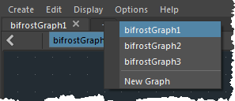
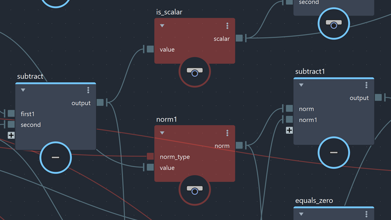

要打开某个图表，请在“大纲视图”(Outliner)中选择该图表，然后选择“Window > Bifrost Graph Editor”(窗口 > Bifrost 图表编辑器)。
如果“Bifrost 曲线图编辑器”(Bifrost Graph Editor)已处于打开状态，则可以通过选项卡栏上的 + 图标选择现有图表。图表将在一个新选项卡中打开。

加载包含旧图表的场景时，某些节点可能“丢失”。例如，如果找不到定义自定义复合的 JSON 文件，或者自定义节点定义反过来引用缺少定义的节点，则可能会发生这种情况。
发生这种情况时，将作为“未知节点”重新创建缺少的节点。这些节点在图表中显示为深红色节点。在此状态下，图表无法像以前一样工作，因为这些节点执行的计算是未知的。
但是，将保留未知节点的外部连接和输入值。这样，您可以看到之前存在的图表，并且可以更轻松地修复或更新图表。

可以复制并粘贴未知节点，以及修改并保存包含这些节点的场景。也可以炸开包含这些节点的复合，并使用右键单击菜单移除未知端口。正确的节点定义可用后，图表将正常工作。